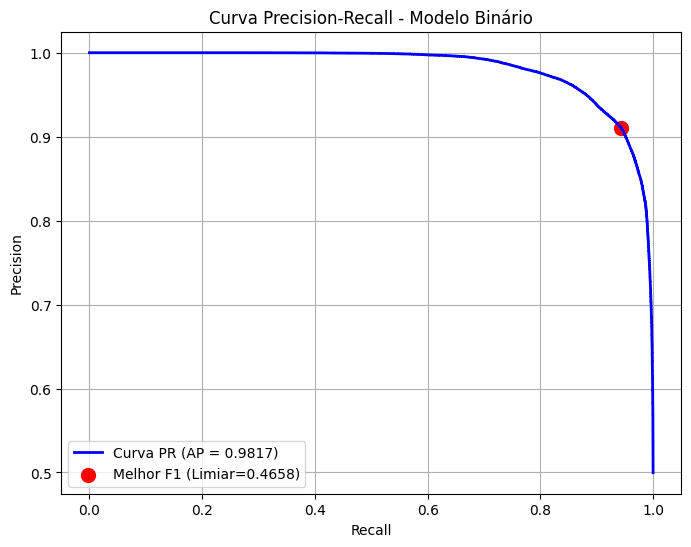
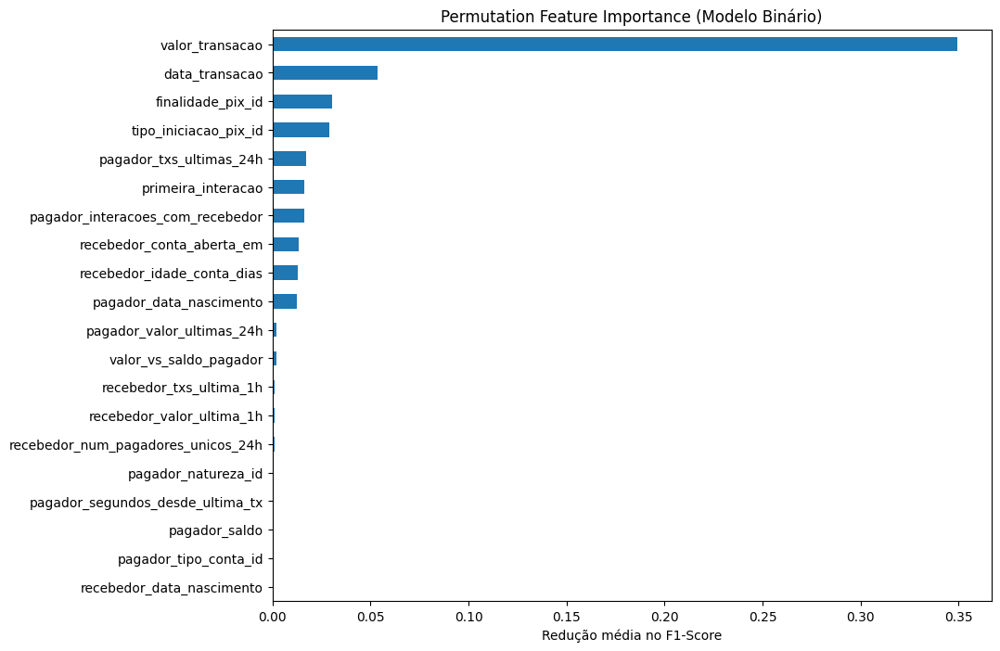
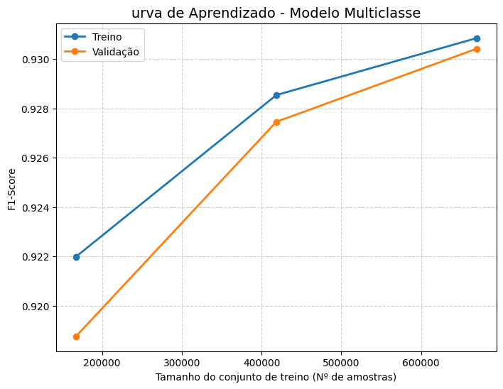

Arquitetura de Inteligência Artificial¶
A camada de inteligência do projeto IARA foi desenhada para operar em tempo real e com alta especificidade. Para equilibrar o custo computacional com a precisão da detecção, adotou-se uma arquitetura de classificação em duas etapas (Cascata).
1. Visão Geral da Arquitetura¶
O sistema não utiliza um único modelo gigante. Em vez disso, divide o problema em duas perguntas distintas:
- Estágio 1 (Filtro de Risco): "Esta transação é fraudulenta?"
- Modelo: Classificador Binário.
- Objetivo: Maximizar o Recall (evitar Falsos Negativos).
- Estágio 2 (Tipificador): "Qual é o tipo dessa fraude?"
- Modelo: Classificador Multiclasse.
- Objetivo: Categorizar o vetor de ataque para automatizar a resposta (ex: bloquear conta vs. alertar cliente).
- Gatilho: Executado apenas se o Estágio 1 classificar como fraude.
2. Stack Tecnológico¶
A implementação utiliza o estado da arte do ecossistema Python para Deep Learning tabular.
| Componente | Biblioteca | Versão | Função |
|---|---|---|---|
| Deep Learning | TensorFlow / Keras |
2.16.1 | Construção das Redes Neurais Densas (DNN). |
| Pipeline | Scikit-Learn |
1.4.2 | Pré-processamento (ColumnTransformer, StandardScaler). |
| Wrapper | SciKeras |
0.13.0 | Integração Keras/Sklearn para uso em Pipelines e GridSearch. |
| Rastreamento | MLflow |
- | Versionamento de modelos, métricas e artefatos. |
| Serialização | Joblib |
- | Persistência eficiente dos pipelines. |
3. Engenharia de Features e Pré-Processamento¶
Os dados brutos passam por um ColumnTransformer antes de alimentar os tensores das redes neurais.
3.1. Transformações Numéricas¶
- Método:
StandardScaler. - Alvo: Features contínuas (ex:
valor\_transacao,pagador\_saldo,ratios). - Justificativa: Redes neurais convergem mais rápido e são menos enviesadas quando os dados estão normalizados (média 0, desvio padrão 1), especialmente para distribuições Log-Normais.
3.2. Transformações Categóricas¶
- Método:
OneHotEncoder(handle\_unknown='ignore'). - Alvo: IDs categóricos (ex:
tipo\_iniciacao\_pix\_id,pagador\_natureza\_id). - Justificativa: Converte categorias em vetores binários esparsos, evitando que o modelo infira uma ordem ordinal inexistente.
3.3. Features Temporais Cíclicas¶
- Método:
FunctionTransformer(Customizado). - Alvo:
data\_transacao(Hora do dia, Dia da semana). - Justificativa: Transforma o tempo em componentes seno/cosseno para que o modelo entenda a continuidade entre 23h e 00h.
4. Especificação das Redes Neurais (DNNs)¶
Ambos os modelos utilizam arquiteturas Feedforward densas, otimizadas via Adam.
[Image of feedforward neural network diagram]
4.1. Modelo Binário (Risco)¶
def build_binary_model(meta):
import tensorflow as tf
model = tf.keras.Sequential([
# Camada de Entrada + Oculta 1
tf.keras.layers.Dense(64, activation='relu', input_shape=(meta["n_features_in_"],)),
tf.keras.layers.Dropout(0.3), # Regularização para evitar Overfitting
# Camada Oculta 2
tf.keras.layers.Dense(32, activation='relu'),
tf.keras.layers.Dropout(0.3),
# Saída Binária (Probabilidade 0 a 1)
tf.keras.layers.Dense(1, activation='sigmoid')
])
model.compile(
loss='binary_crossentropy',
optimizer=tf.keras.optimizers.Adam(learning_rate=0.001),
metrics=['AUC', 'Recall']
)
return model
4.2. Modelo Multiclasse (Tipificador)¶
def build_multiclass_model(meta):
import tensorflow as tf
model = tf.keras.Sequential([
# Estrutura similar para extração de features latentes
tf.keras.layers.Dense(64, activation='relu', input_shape=(meta["n_features_in_"],)),
tf.keras.layers.Dropout(0.3),
tf.keras.layers.Dense(32, activation='relu'),
# Saída Multiclasse (Vetor de Probabilidades)
# n_classes é injetado dinamicamente pelo SciKeras
tf.keras.layers.Dense(meta["n_classes_"], activation='softmax')
])
model.compile(
loss='sparse_categorical_crossentropy', # Labels inteiros
optimizer=tf.keras.optimizers.Adam(learning_rate=0.001),
metrics=['accuracy']
)
return model
5. Avaliação de Performance¶
Os modelos foram validados em um conjunto de teste independente (\~215k amostras).
5.1. Resultados do Modelo Binário¶
O foco deste modelo é o Recall (captura de fraude).
| Métrica | Resultado | Análise |
|---|---|---|
| ROC AUC | 0.9806 | Capacidade de separação excepcional entre legítimo e fraude. |
| Recall | 0.9267 | O modelo detecta \~92.7% de todas as fraudes apresentadas. |
| Precision | 0.9220 | Baixa taxa de falsos positivos, reduzindo atrito com clientes. |
| F1-Score | 0.9244 | Equilíbrio harmônico robusto. |
5.1.1 Graficos¶
 ¶
¶
 ¶
¶
¶
¶
 ¶
¶

5.2. Resultados do Modelo Multiclasse¶
Desempenho discriminatório por tipo de ataque (Métrica AUC One-vs-Rest).
| Tipo de Fraude | AUC (OvR) | Performance |
|---|---|---|
| Engenharia Social | 0.9961 | Quase Perfeita. Fortemente impulsionada pela feature de idade. |
| Consolidação de Fundos | 0.9816 | Excelente. Detecta padrões de agregação (Fan-In). |
| Valor Atípico | 0.9794 | Excelente. Detecta desvios de perfil. |
| Triangulação (Laranja) | 0.9651 | Muito Forte. Leve confusão com "Valor Atípico" devido à similaridade financeira. |
5.2.1 Graficos¶
¶
 ¶
¶
 ¶
¶
 ¶
¶

6. Interpretabilidade (Feature Importance)¶
A análise de Permutation Importance revelou o que impulsiona as decisões de cada modelo.
6.1. Drivers do Modelo Binário¶
O modelo de risco foca em anomalias financeiras e temporais.
valor\_transacao(\~35%): O valor é o preditor dominante.data\_transacao(\~5.4%): Horários suspeitos (madrugada) são fortes indicativos.finalidade\_pix\_id(\~3.0%): O contexto da operação.
6.2. Drivers do Modelo Multiclasse¶
O tipificador depende de dados demográficos para distinguir os vetores de ataque.
pagador\_data\_nascimento(\~25%): Fundamental para separar Engenharia Social (vítimas idosas) de Laranjas (jovens).data\_transacao(\~17%): Diferencia ataques automatizados noturnos.
7. Pipeline de Inferência e Produção¶
O sistema exporta artefatos serializados que encapsulam todo o pipeline (transformação + modelo) para inferência simples via API.
7.1. Artefatos Exportados¶
Armazenados no Unity Catalog ou Blob Storage:
fraud\_binary\_pipeline.pkl: Pipeline completo do classificador de risco.fraud\_type\_pipeline.pkl: Pipeline completo do tipificador.fraud\_type\_label\_map.json: Mapa para decodificar a saída numérica (ex: 0 -> "engenharia_social").
7.2. Lógica de Execução (prever_fraude)¶
# Pseudo-código da lógica de inferência
def prever_fraude(transacao_df, binary_pipeline, multiclass_pipeline, label_map, THRESHOLD):
# 1. Filtro de Risco
# Usa predict_proba para obter a probabilidade de ser a classe positiva (fraude)
probabilidade = binary_pipeline.predict_proba(transacao_df)[:, 1]
if probabilidade < THRESHOLD:
return {"status": "LEGITIMO"}
# 2. Se for fraude, tipificar
else:
probs_tipos = multiclass_pipeline.predict_proba(transacao_df)
# Encontra o índice da classe com maior probabilidade
import numpy as np
classe_idx = np.argmax(probs_tipos, axis=1)[0]
nome_fraude = label_map[str(classe_idx)]
return {
"status": "FRAUDE",
"tipo": nome_fraude,
"score": probabilidade[0]
}